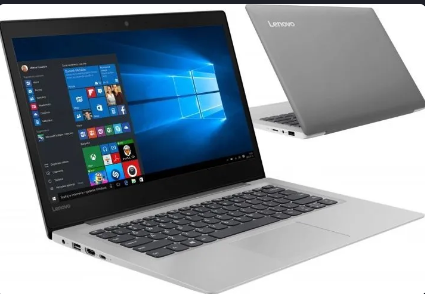
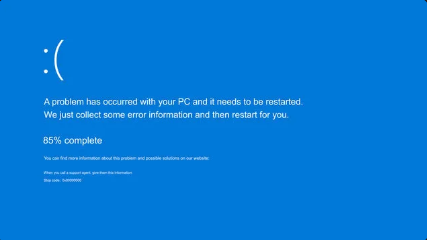

Unlike windows Linux comes in driffent distrobutions, and since linux code is open sourced anyone can use the code and make thier own.
HOwever a lot of people use linux as well. ANd if you want to start usingLinux but dont know which distrobution to use keep reading. Now I just want to point out here that the reason I dont use linux is because I need a better computor. Im gonna be honest I dont have a pc. I use this :
Anyways lets a go!
Garuda Linux. It is a really cool ditro, And arch based + It look cool and comes with a gaming edition. And its very powerful.
This distrobution is well known among the people of linux. It can be used by beggining and advanced users. It is debian based, and gnome look based. Overall it has a nice feel and has long term support and not to mention you can install a multitude of apps on it becasue it is popular. It also comes in a lot of flavours, so if you dont like the normal look you can get a flavour. Releases come out every 6 months, and you can download ubuntu server and ubuntu Iot and ubuntu cloud. So really recomend this I wish I could install it, but I just have too much stuff on my computor. However you may want to look out for the interface, because I bet 75% of you are using windows, so try use a driffent flavour if migrating from windows or use the next on the list ..
THis is another well known distribution, that is perfect among the migrating windows users. It has that interface so much like windows, and has a lot of similarities. Scince it is popullar like ubuntu a lot of apps support it and will be able to use it to download popular apps, eg brave, vs code, and much more. I think This deservs a i dunno a 9.9/10. Anyways moving on ..

This is simmilar to linux mint, and simmilar to ubuntu. It has a bunch of stuff like its own file explorer, and media player, and also really nice look. I think I would probably give it a try.However worth noting that you shouldnt be using it on a older computor. THats the same for ubuntu as well so make sure to always be aware of the requiments for each distrobutions, because you might get a blue screen of death.
FOr those that didnt fit in but are still good
Anyways thats it for this post. Sorry for getting the wrong changelog on github, and also for not making a post last week. Make sure to tip me, I hope you liked this post and this is it. c ya - CoderCHip